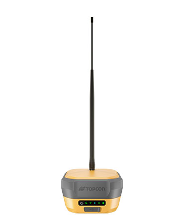
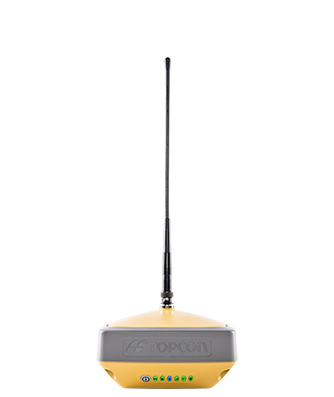
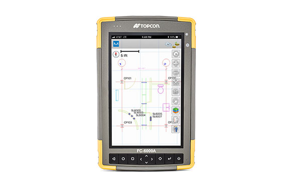

GNSS Base
Description
GNSS receiver with integrated antenna, 4G modem and radio
Ideal use
Measurement, layout, field survey,
grade checking, base or rover,
Hybrid positioning™.
Calibration-free and magnetically
immune IMU TILT.
Constellations tracked
GPS , GLONASS, BeiDou , Galileo , SBAS , QZSS , IRNSS
Communications for corrections (availability varies by region)
UHF radio,FH915 spread spectrum radio,LongLink™,Bluetooth®,4G Cell,Wi-Fi
Learn More

GNSS Rover
Description
GNSS receiver with integrated antenna and radio
Ideal use
Measurement, layout, field survey, grade checking, base or rover, Hybrid positioning™, TILT
Constellations tracked
GPS , GLONASS, BeiDou , Galileo , SBAS , QZSS , IRNSS
Communications for corrections (availability varies by region)
UHF radio, FH915+ spread, spectrum radio, LongLink™, Bluetooth®, 4G Cell (Europe), L-band
Learn More

Android device for Surveying
Brief description of the offering.
Ideal uses
Data collection, file access, field controller
Operating system
Android 11
Processor
Qualcomm Snapdragon™ Octa-core Kryo™ 260 2.2 GHz
Screen size
7”
Learn More